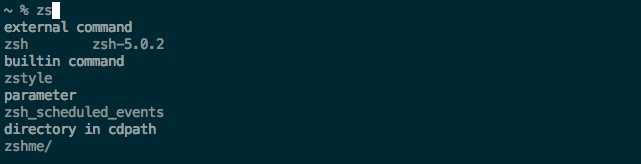
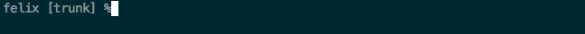
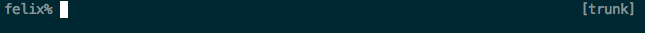
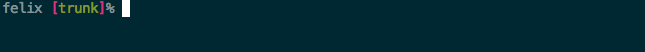
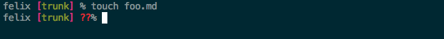
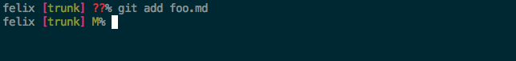
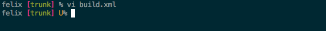

% brew install zsh % brew install zsh-completions
Install via package manager
This is the Z Shell configuration function for new users,
zsh-newuser-install.
You are seeing this message because you have no zsh startup files
(the files .zshenv, .zprofile, .zshrc, .zlogin in the directory
~). This function can help you with a few settings that should
make your use of the shell easier.
You can:
(q) Quit and do nothing. The function will be run again next time.
(0) Exit, creating the file ~/.zshrc containing just a comment.
That will prevent this function being run again.
(1) Continue to the main menu.
--- Type one of the keys in parentheses ---
Type 'q' to exit setup program
Allows changing directory without typing cd
If an entry is not a command, then check if a directory name matches
Enable with
setopt autocd
Given typical home folders
/Users/MikePigg
├── Applications
├── Desktop
├── Documents
├── Downloads
├── Library
├── Movies
├── Music
├── Pictures
├── Public
├── Sites
└── bin
/Users/MikePigg% Desktop
/Users/MikePigg/Desktop% foo
/Users/MikePigg/Desktop/foo% ~
/Users/MikePigg% Downloads
/Users/MikePigg/Downloads% Documents zsh: command not found: Documents /Users/MikePigg/Downloads%
cdpath provides a list of directories to search for autocd completions
I set cdpath to include
cdpath=(~ ~/src ~/src/topsecretclient/awesomeproject)
/Users/MikePigg% Desktop
/Users/MikePigg/Desktop% foo
/Users/MikePigg/Desktop/foo% ~
/Users/MikePigg% Downloads
/Users/MikePigg/Downloads% Documents
~/Documents
/Users/MikePigg/Documents%
Felix is Apache's OSGi container implementation
OSGi projects are composed of lots of modules
A Felix checkout has 59 directories roughly corresponding to modules of the system
.
├── bundleplugin
├── bundlerepository
├── commons
├── configadmin
├── coordinator
├── dependencymanager
├── deploymentadmin
├── deviceaccess
├── doap
├── eventadmin
├── examples
├── fileinstall
├── framework
├── framework.security
├── gogo
├── http
├── http.jetty
├── installers
├── io
├── ipojo
├── javax.servlet
.
.
.
├── utils
├── webconsole
├── webconsole-plugins
└── wireadmin
Add Felix to cdpath
cdpath=($cdpath ~/src/felix)
Now I can easily jump to Felix
~% felix ~/src/felix felix%
Jump between subprojects in Felix
felix% gogo gogo%
gogo% http ~/src/felix/http http%
http% webconsole ~/src/felix/webconsole webconsole%
webconsole% http/bridge ~/src/felix/http/bridge bridge%
Like other shells, zsh supports command history
Up arrow is bound to previous, down arrow to next
zsh allows searching in history for previous uses of same command
Enable with
bindkey '^[[A' up-line-or-search bindkey '^[[B' down-line-or-search
Simple usage scenario
% mvn test
[INFO] Scanning for projects...
.
.
.
% vi FailingTest.java
% mvn<up arrow>
fills in with
% mvn test
zsh supports advanced globbing patterns
I particularly like the ** pattern
This gives you more power with tools like grep
List all pom files in felix/http
/Users/MikePigg/src/felix% ls http/**/pom.xml
http/api/pom.xml http/proxy/pom.xml
http/base/pom.xml http/samples/bridge/pom.xml
http/bridge/pom.xml http/samples/cometd/pom.xml
http/bundle/pom.xml http/samples/filter/pom.xml
http/cometd/pom.xml http/samples/whiteboard/pom.xml
http/jetty/pom.xml http/sslfilter/pom.xml
http/parent/pom.xml http/whiteboard/pom.xml
http/pom.xml
Find all POMs in felix/http that are using SNAPSHOT versions
/Users/MikePigg/src/felix% grep SNAPSHOT http/**/pom.xml http/api/pom.xml:1-SNAPSHOT http/api/pom.xml:2.2.1-SNAPSHOT http/base/pom.xml:1-SNAPSHOT http/base/pom.xml:2.2.1-SNAPSHOT http/bridge/pom.xml:1-SNAPSHOT http/bridge/pom.xml:2.2.1-SNAPSHOT . . . http/samples/bridge/pom.xml:2.2.1-SNAPSHOT http/samples/cometd/pom.xml:1-SNAPSHOT http/samples/cometd/pom.xml:2.2.1-SNAPSHOT http/samples/filter/pom.xml:1-SNAPSHOT http/samples/filter/pom.xml:2.2.1-SNAPSHOT http/samples/whiteboard/pom.xml:1-SNAPSHOT http/samples/whiteboard/pom.xml:2.2.1-SNAPSHOT http/sslfilter/pom.xml:0.0.1-SNAPSHOT http/whiteboard/pom.xml:1-SNAPSHOT http/whiteboard/pom.xml:2.2.1-SNAPSHOT
When an entry looks like it might be a mistyped command, zsh will offer to correct it
enabled with
setopt correct
Autocorrect for the save
/Users/MikePigg/src/felix/http% mnv compile
zsh: correct 'mnv' to 'mvn' [nyae]? y
zsh has rich support for completing
Customizing completion presentation
zstyle ":completion:*:descriptions" format "%B%d%b"
zstyle ':completion:*' group-name ''
Show me a description of each type of completion
Keep commands with their type
Showing completion descriptions and groups
On second completion request goes into an interactive menu mode
Arrow keys can be used to select a completion
Enabled with
zmodload zsh/complist
zstyle ':completion*:default' menu 'select=0'
zsh has extensive support for completing command parameters in many programs
zsh-completions provides support for more external programs such as Maven
Basic Maven completion
% mvn <tab>
phase
clean -- remove all files generated by the previous build
compile -- compile the source code of the project
deploy -- done in an integration or release environment, copies the
install -- install the package into the local repository, for use as
integration-test -- process and deploy the package if necessary into an enviro
package -- take the compiled code and package it in its distributable
site -- generates the projects site documentation
site-deploy -- deploys the generated site documentation to the specified
test -- run tests using a suitable unit testing framework
verify -- run any checks to verify the package is valid and meets qu
Filling in Maven projects for pl parameter
% mvn compile -pl http<tab>
project
http http/jetty http/samples/whiteboard
http/api http/parent http/sslfilter
http/base http/proxy http/whiteboard
http/bridge http/samples/bridge httplite
http/bundle http/samples/cometd httplite/complete
http/cometd http/samples/filter httplite/core
suppose we create a script called mvnbuild that has
mvn clean install $@
Now we've lost command completion for maven - all we get is file completion
It would be nice to use the command completion for mvn with this command
compdef lets us tell the completion system what completion function to use for mvnbuild
% compdef _mvn mvnbuild
% mvnbuild -pl http
project
http http/jetty http/samples/whiteboard
http/api http/parent http/sslfilter
http/base http/proxy http/whiteboard
http/bridge http/samples/bridge httplite
http/bundle http/samples/cometd httplite/complete
http/cometd http/samples/filter httplite/core
Using the open command to open test.txt
open test.txt
By default, it will open in TextEdit
% open test.txt -a Ma<tab> Mac OS X application MacVim MakePDF ManagedClient Match Mail MallocDebug MassStorageCamera
Felix has long branch names with pattern 'org.apache.felix.*'
felix% git checkout o<tab>rg.apache.felix.<tab> org.apache.felix.framework-1.2.1 org.apache.felix.framework-1.8.0 org.apache.felix.framework-1.8.1-RC org.apache.felix.framework-2.0.5-RC org.apache.felix.framework-3.0.8-RC org.apache.felix.framework-4.0.3-RC org.apache.felix.main-1.2.1 org.apache.felix.main-1.8.0 org.apache.felix.main-1.8.1-RC org.apache.felix.main-2.0.5-RC org.apache.felix.main-3.0.8-RC org.apache.felix.main-4.0.3-RC org.apache.felix.main.distribution-2.0.5-RC org.apache.felix.main.distribution-3.0.8-RC org.apache.felix.main.distribution-4.0.3-RC
Suppose I need to clone git repos from
I'd like to not have to type out the common URL each time (https://github.com/)
One way to address this is to set up a completion function for git clone
Create a shell function shortcut
shorter
won't have collisions with existing git completion
gcl () {
git clone "$@"
}
Define a completion function for gcl in a file called _gcl
must be on fpath
#compdef gcl
_arguments ":clone repo:(${GCL_URLS})"
Add urls
GCL_URLS=(https://github.com/ https://bitbucket.org/)
Use it!
src % gcl <tab>
src % gcl https://<tab>
clone repo
https://bitbucket.org/ https://github.com/
Supports git, svn, hg, etc.
Allows customizing command line with useful info
%b in formats = current branch name
setopt prompt_subst
autoload -Uz vcs_info
zstyle ':vcs_info:*' enable git svn
zstyle ':vcs_info:*' formats '[%b]'
precmd() { vcs_info }
PROMPT='%c ${vcs_info_msg_0_}%# '

PROMPT='%c%# '
RPROMPT='${vcs_info_msg_0_}'

%F = start foreground color
%f = end coloring
zstyle ':vcs_info:*' formats '%F{5}[%F{2}%b%F{5}]%f'

Shows us when we have staged, unstaged, or untracked files in the repo
zstyle ':vcs_info:*' stagedstr 'M'
zstyle ':vcs_info:*' unstagedstr 'U'
zstyle ':vcs_info:*' check-for-changes true
zstyle ':vcs_info:git*+set-message:*' hooks git-untracked
+vi-git-untracked() {
if [[ $(git rev-parse --is-inside-work-tree 2> /dev/null) == 'true' ]] && \
git status --porcelain | grep '??' &> /dev/null; then
hook_com[unstaged]+='%F{1}??%f'
fi
}
zstyle ':vcs_info:*' formats '%F{5}[%F{2}%b%F{5}] %F{2}%c%F{3}%u%f'
zstyle ':vcs_info:*' actionformats '%F{5}[%F{2}%b%F{3}|%F{1}%a%F{5}]%f'
Thanks Christopher!: http://stackoverflow.com/a/12935606/576077
untracked file
staged file
modified file

$ autoload -U promptinit
$ promptinit
~% prompt<tab> prompt theme adam1 bart clint elite2 fire oliver redhat walters adam2 bigfade elite fade off pws suse zefram
Michael Pigg
@mikepigg
@ChariotSolution
@techcast